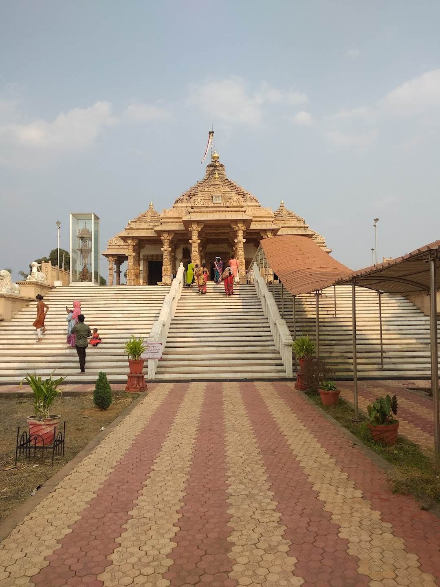
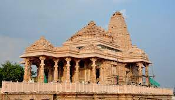

Jain Temple
Jain Temple
Jain temple dedicated to 23rd Jain Tirthankar Parshvanath known as Kesariyaji Parshvanath located in Bhadravati. The temple belongs to Shwetamber sect of Jain religion.The city's Bhadravati Jain Temple is a renowned place of worship for local Jain devotees. Elegant sculptures adorn the interior. The Central Railway will take you 32 kilometres to the settlement of Bhadravati, where you'll find the temple.
Features

Renovated in recent past is the Jain Temple known among Jain Community all over India is run by elected trustees body. The campus has air conditioned rooms and food is available at reasonably low prices.
About
Bhadravati Jain Temple is situated at Bhadrawati, located 32 kilometers from Chandrapur town. Edit Shri Keshariya Parshwanath Jain Mandir, Bhdrawati Jain Temple is situated at Bhadrawati, in the heart of the city. The temple has very good in Architecture and also a popular destination. The area, the temple the lord all are beautiful. It has a dharamshala in its campus for stay. Inside is very much clean and the temple is more beautiful in night with lights on than in daytime.